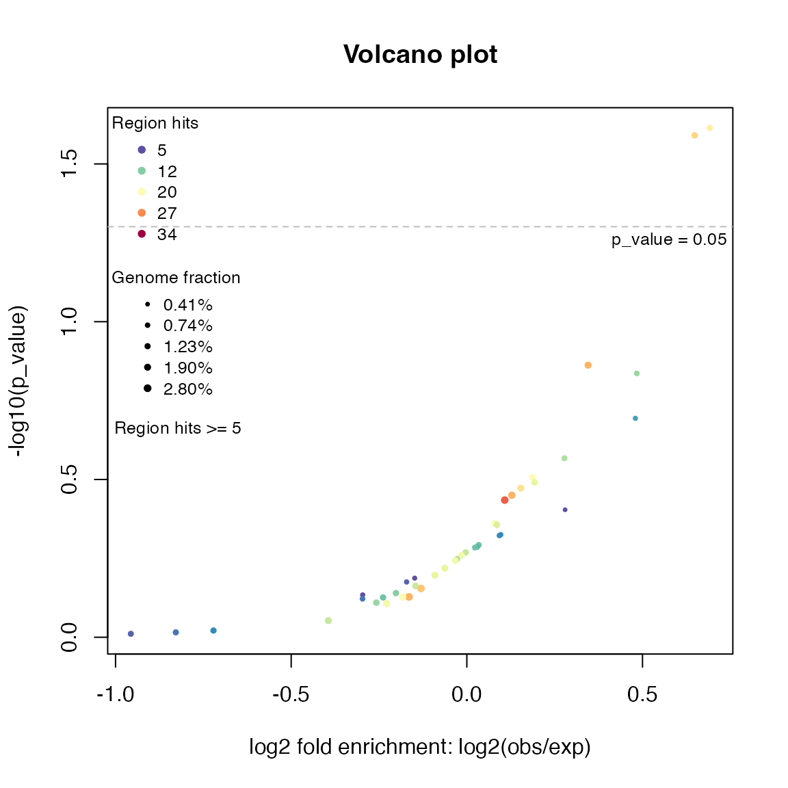
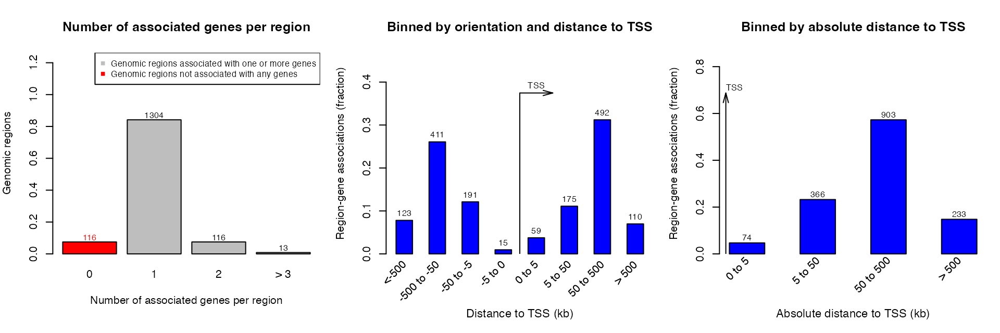
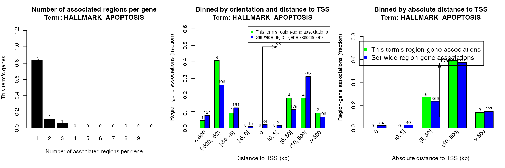

vignettes/local-GREAT.Rmd
local-GREAT.RmdGREAT (Genomic Regions Enrichment of Annotations Tool) is a popular web-based tool to associate biological functions to genomic regions, however, its nature of being an online tool has several limitations:
From rGREAT version 1.99.0, it implements the GREAT algorithms locally and it can be seamlessly integrated to the Bioconductor annotation ecosystem. This means, theoretically with rGREAT, it is possible to perform GREAT analysis with any organism and with any type of gene set collection / ontology. Another advantage is, Bioconductor annotation packages are always very well maintained and updated, which means the data source of your analysis can be ensured to be most up-to-date.
First let’s load the rGREAT package and generate a random set of regions:
great()
The function great() is the core function to perform local GREAT analysis. You can either use built-in annotations or use self-provided annotations.
great() has integrated many annotation databases which cover many organisms. Users simply specify the name of gene set collection (via the second argument) and the source of TSS (via the third argument).
res = great(gr, "MSigDB:H", "txdb:hg19")
res## 1000 regions are associated to 1414 genes' extended TSSs.
## TSS source: TxDb.Hsapiens.UCSC.hg19.knownGene
## Genome: hg19
## OrgDb: org.Hs.eg.db
## Gene sets: MSigDB:H
## Background: whole genome
## Mode: Basal plus extension
## Proximal: 5000 bp upstream, 1000 bp downstream,
## plus Distal: up to 1000000 bpThere are following supported gene set collections. The first category are GO gene sets. The gene sets data is from GO.db package.
"GO:BP": Biological Process."GO:CC": Cellular Component."GO:MP": Molecular Function.The prefix GO: can be omitted when it is specified in great().
The second category of gene sets are from MSigDB. Note this is only for human:
"msigdb:H" Hallmark gene sets."msigdb:C1" Positional gene sets."msigdb:C2" Curated gene sets."msigdb:C2:CGP" C2 subcategory: chemical and genetic perturbations gene sets."msigdb:C2:CP" C2 subcategory: canonical pathways gene sets."msigdb:C2:CP:BIOCARTA" C2 subcategory: BioCarta subset of CP."msigdb:C2:CP:KEGG" C2 subcategory: KEGG subset of CP."msigdb:C2:CP:PID" C2 subcategory: PID subset of CP."msigdb:C2:CP:REACTOME" C2 subcategory: REACTOME subset of CP."msigdb:C2:CP:WIKIPATHWAYS" C2 subcategory: WIKIPATHWAYS subset of CP."msigdb:C3" Regulatory target gene sets."msigdb:C3:MIR:MIRDB" miRDB of microRNA targets gene sets."msigdb:C3:MIR:MIR_LEGACY" MIR_Legacy of MIRDB."msigdb:C3:TFT:GTRD" GTRD transcription factor targets gene sets."msigdb:C3:TFT:TFT_LEGACY" TFT_Legacy."msigdb:C4" Computational gene sets."msigdb:C4:CGN" C4 subcategory: cancer gene neighborhoods gene sets."msigdb:C4:CM" C4 subcategory: cancer modules gene sets."msigdb:C5" Ontology gene sets."msigdb:C5:GO:BP" C5 subcategory: BP subset."msigdb:C5:GO:CC" C5 subcategory: CC subset."msigdb:C5:GO:MF" C5 subcategory: MF subset."msigdb:C5:HPO" C5 subcategory: human phenotype ontology gene sets."msigdb:C6" Oncogenic signature gene sets."msigdb:C7" Immunologic signature gene sets."msigdb:C7:IMMUNESIGDB" ImmuneSigDB subset of C7."msigdb:C7:VAX" C7 subcategory: vaccine response gene sets."msigdb:C8" Cell type signature gene sets.The prefix msigdb: can be omitted when specified in great() and the name of a MSigDb can be used as case insensitive.
rGREAT supports TSS from several sources. The value of argument tss_source should be encoded in a special format:
TxDb.* package, e.g. TxDb.Hsapiens.UCSC.hg19.knownGene. Supported packages are in rGREAT:::BIOC_ANNO_PKGS$txdb.RefSeq:$genome where $genome is the genome version of an organism. RefSeqSelect genes will be used.RefSeqCurated:$genome where $genome is the genome version of an organism. RefSeqCurated subset will be used.RefSeqSelect:$genome where $genome is the genome version of an organism. RefSeqSelect subset will be used.Gencode_v$version where $version is Gencode version, such as 19 (for human) or M21 for mouse. Gencode protein coding genes will be used.GREAT:$genome, where $genome can only be “mm9”, “mm10”, “hg19”, “hg38”. TSS from GREAT will be used. The data is downloaded from https://great-help.atlassian.net/wiki/spaces/GREAT/pages/655445/Genes.The difference of RefSeqCurated and RefSeqSelect is explained in https://genome.ucsc.edu/cgi-bin/hgTrackUi?db=hg38&g=refSeqComposite.
Some examples are:
If users have their own gene sets, the gene sets can be set as a named list of vectors where each vector corresponds to one gene set. Please note the genes in the gene sets must be in Entrez ID type. In the following example, we use a gene set collection from DSigDB. This collection (FDA approved kinase inhibitors) only contains 28 gene sets.
Here read_gmt() is a simple function that reads a gmt file as a list of vectors, also performs gene ID conversion.
gs = read_gmt(url("http://dsigdb.tanlab.org/Downloads/D2_LINCS.gmt"),
from = "SYMBOL", to = "ENTREZ", orgdb = "org.Hs.eg.db")
gs[1:2]## $GSK429286A
## [1] "5566" "9475" "81788" "6093" "5562" "26524" "5592" "5979" "640"
## [10] "5567" "3717" "5613" "23012" "695" "3718"
##
## $`BS-181`
## [1] "122011" "1452" "1022" "7272" "1454" "1453" "65975" "147746"
## [9] "1859" "1195" "1196" "9149" "57396" "5261"
great(gr, gs, "hg19")## 1000 regions are associated to 1414 genes' extended TSSs.
## TSS source: TxDb.Hsapiens.UCSC.hg19.knownGene
## Genome: hg19
## OrgDb: org.Hs.eg.db
## Gene sets: self-provided
## Background: whole genome
## Mode: Basal plus extension
## Proximal: 5000 bp upstream, 1000 bp downstream,
## plus Distal: up to 1000000 bpUsers may have their own set of genes/TSS, as in the following example:
df = read.table(gzfile(system.file("extdata", "GREATv4.genes.hg19.tsv.gz", package = "rGREAT")))
# note there must be a 'gene_id' column
tss = GRanges(seqnames = df[, 2], ranges = IRanges(df[, 3], df[, 3]),
strand = df[, 4], gene_id = df[, 5])
head(tss)## GRanges object with 6 ranges and 1 metadata column:
## seqnames ranges strand | gene_id
## <Rle> <IRanges> <Rle> | <character>
## [1] chr1 69090 + | OR4F5
## [2] chr1 367639 + | OR4F29
## [3] chr1 622053 - | OR4F16
## [4] chr1 861117 + | SAMD11
## [5] chr1 894670 - | NOC2L
## [6] chr1 895966 + | KLHL17
## -------
## seqinfo: 25 sequences from an unspecified genome; no seqlengthsIn this case, users must manually generate an “extended TSS” by extendTSS() function. They should also explicitly specify the gene ID type in extendTSS() so that great() can correctly map to the genes in gene sets.
In the example, IDs for genes in tss are symbols, thus, gene_id_type must be set to "SYMBOL" so that the correct gene ID type will be selected for internal gene sets.
et = extendTSS(tss, genome = "hg19", gene_id_type = "SYMBOL")
great(gr, "msigdb:h", extended_tss = et)## 1000 regions are associated to 1419 genes' extended TSSs.
## TSS source: self-provided
## Genome: hg19
## OrgDb: org.Hs.eg.db
## Gene sets: msigdb:h
## Background: whole genome
## Mode: Basal plus extension
## Proximal: 5000 bp upstream, 1000 bp downstream,
## plus Distal: up to 1000000 bpIf gene ID type in tss is one of Ensembl/RefSeq/Entrez ID, gene_id_type argument can be omitted because the ID type can be automatically inferred from the format of the gene IDs, but it is always a good idea to explicitly specify it if the data is self-provided.
If your organism is not defaultly supported, you can always use the extendTSS() to manually construct one. Note in GREAT algorithm, TSS are first extended by a rule (e.g. basal plus extension). extendTSS() accepts a GRanges object of gene or TSS and it returns a new GRanges object of extended TSS.
In the following example, since I don’t have data for the organism not defaultly supported by rGREAT. I simply use human data to demonstrate how to manually construct the extended TSS.
There are two objects for extendTSS(): the gene (or the TSS) and the length of chromosomes. The gene object must have a meta column named “gene_id” which stores gene ID in a specific type (this ID type will be mapped to the genes in gene sets). The chromosome length object is a named vector and it also controls the total set of chromosomes to be used in the analysis.
library(TxDb.Hsapiens.UCSC.hg19.knownGene)
gene = genes(TxDb.Hsapiens.UCSC.hg19.knownGene)
gene = gene[seqnames(gene) %in% paste0("chr", c(1:22, "X", "Y"))]
head(gene)## GRanges object with 6 ranges and 1 metadata column:
## seqnames ranges strand | gene_id
## <Rle> <IRanges> <Rle> | <character>
## 1 chr19 58858172-58874214 - | 1
## 10 chr8 18248755-18258723 + | 10
## 100 chr20 43248163-43280376 - | 100
## 1000 chr18 25530930-25757445 - | 1000
## 10000 chr1 243651535-244006886 - | 10000
## 100008586 chrX 49217763-49233491 + | 100008586
## -------
## seqinfo: 93 sequences (1 circular) from hg19 genome## chr1 chr2 chr3 chr4 chr5 chr6
## 249250621 243199373 198022430 191154276 180915260 171115067Simply send gene and gl to extendTSS():
## GRanges object with 6 ranges and 3 metadata columns:
## seqnames ranges strand | gene_id tss_position
## <Rle> <IRanges> <Rle> | <character> <integer>
## 100287102 chr1 1-28962 * | 100287102 11874
## 653635 chr1 12873-64091 * | 653635 29961
## 79501 chr1 34961-139567 * | 79501 69091
## 729737 chr1 70090-713069 * | 729737 140566
## 100288069 chr1 145566-757971 * | 100288069 714068
## 643837 chr1 719068-763970 * | 643837 762971
## tss_strand
## <character>
## 100287102 +
## 653635 -
## 79501 +
## 729737 -
## 100288069 -
## 643837 +
## -------
## seqinfo: 24 sequences from an unspecified genomeWe can also manually construct the gene sets object, which is simply a named list of vectors where each vector contains genes in a gene set. Here we directly use the object gs generated before which is a gene set collection from DSigDB.
Please note again, gene IDs in gs should be the same as in et.
Now gs and et can be sent to great() to perform local GREAT with the annotation data you manually provided.
great(gr, gene_sets = gs, extended_tss = et)## 1000 regions are associated to 1490 genes' extended TSSs.
## TSS source: self-provided
## Genome: unknown
## Gene sets: self-provided
## Background: whole genome
## Mode: Basal plus extension
## Proximal: 5000 bp upstream, 1000 bp downstream,
## plus Distal: up to 1000000 bprGREAT also supports GO gene sets for a huge number of organisms retrieved from Ensembl BioMart. A specific organism can be set with the biomart_dataset argument:
# giant panda
great(gr, "GO:BP", biomart_dataset = "amelanoleuca_gene_ensembl")Note both TSS and gene sets are from BioMart. The value for gene sets (the second argument) can only be one of "GO:BP", "GO:CC" and "GO:MF".
rGREAT now supports 562 organisms. The complete list can be found at https://jokergoo.github.io/rGREAT_genesets/. Just make sure the genome version is the same as the genome of your input regions.
In the online GREAT tool, if background regions are set, it actually uses a different test for the enrichment analysis. In GREAT, when background is set, input regions should be exactly subset of background. For example, let’s say a background region list contains five regions: [1, 10], [15, 23], [34, 38], [40, 49], [54, 63], input regions can only be a subset of the five regions, which means they can take [15, 23], [40, 49], but it cannot take [16, 20], [39, 51]. In this setting, regions are taken as single units and Fisher’s exact test is applied for calculating the enrichment (by testing number of regions in the 2x2 contigency table).
This might be useful for certain cases, e.g., for a specific transcriptional factor (TF), we take the union of ChIP-seq peaks of this TF from all tissues as the background set, and only take peaks from one specific tisse as input region set, and we want to test the enrichment of TF peaks in the tissue compared to the “background”. However, this “background definition” might not be the case as many other users may think. They might take “background” as a set of regions where they only want to perform GREAT (the Binomial method) in. E.g. they may want to exclude “gap regions / unsequenced regions” from the analysis because the null hypothesis of Binomial test is the input regions are uniformly distributed in the genome. Since the unsequenced regions will never be measured, they should be excluded from the analysis. Other examples are that the background can be set as regions showing similar GC contents or CpG density as the input regions.
great() supports two arguments background and exclude for setting a proper background. If any one of the two is set, the input regions and the extended TSS regions are intersected to the background, and GREAT algorithm is only applied to the reduced regions.
When whole genome is set as background, denote \(N_1\) as the total number of input regions, \(p_1\) as the fraction of genome that are overlapped to extended TSS of genes in a certain gene set, and \(K_1\) as the number of regions that overlap to the gene set associated regions, then the enrichment test is based on the random variable \(K_1\) which follows Binomial distribution \(K_1 \sim B(p_1, N_1)\).
Similarly, when background regions are set, denote \(N_2\) as the total number of input regions that overlap to backgroud, \(p_2\) as the fraction of background that are overlapped to extended TSS of genes in a certain gene set, and \(K_2\) as the number of regions that overlap to the gene set associated regions and also overlap to background, then the enrichment test is based on the random variable \(K_2\) which follows Binomial distribution \(K_2 \sim B(p_2, N_2)\).
In fact, the native hypergeometric method in GREAT can be approximated to the binomial method here. Nevertheless, the binomial method is more general and it has no restriction as the hypergeometric method where input regions must be perfect subsets of backgrounds.
In the following example, getGapFromUCSC() can be used to retrieve gap regions from UCSC table browser.
gap = getGapFromUCSC("hg19", paste0("chr", c(1:22, "X", "Y")))
great(gr, "MSigDB:H", "hg19", exclude = gap)Alternatively, background and exclude can also be set to a vector of chromosome names, then the whole selected chromosomes will be included/excluded from the analysis.
Simply use getEnrichmentTable() function.
tb = getEnrichmentTable(res)
head(tb)## id genome_fraction observed_region_hits
## 1 HALLMARK_SPERMATOGENESIS 0.013006202 21
## 2 HALLMARK_APOPTOSIS 0.014674462 23
## 3 HALLMARK_IL2_STAT5_SIGNALING 0.019680928 25
## 4 HALLMARK_BILE_ACID_METABOLISM 0.009296570 13
## 5 HALLMARK_HEDGEHOG_SIGNALING 0.006454074 9
## 6 HALLMARK_OXIDATIVE_PHOSPHORYLATION 0.011548106 14
## fold_enrichment p_value p_adjust mean_tss_dist observed_gene_hits
## 1 1.614614 0.02431695 0.5262531 261761 19
## 2 1.567349 0.02567088 0.5262531 248493 18
## 3 1.270265 0.13732116 0.8653711 189866 22
## 4 1.398365 0.14585046 0.8653711 167309 12
## 5 1.394468 0.20240993 0.8653711 307394 7
## 6 1.212320 0.27093709 0.8653711 148492 13
## gene_set_size fold_enrichment_hyper p_value_hyper p_adjust_hyper
## 1 134 1.8620353 0.006231823 0.1277524
## 2 158 1.4960790 0.055874652 0.3818101
## 3 196 1.4740279 0.043234738 0.3716015
## 4 112 1.4070267 0.144591553 0.5928254
## 5 36 2.5534928 0.017302502 0.2364675
## 6 199 0.8578856 0.756322786 0.9803129In getEnrichmentTable(), you can set argument min_region_hits to set the minimal number of input regions that hit a geneset-associated regions. Note the adjusted p-values will be recalculated in the table.
There are also columns for hypergeometric test on the numbers of genes, the same as in the original GREAT method.
There is a new column “mean_tss_dist” in the result table which is the mean absolute distance of input regions to TSS of genes in a gene set. Please note with larger distance to TSS, the more we need to be careful with the reliability of the associations between input regions to genes.
In differential gene expression analysis, volcano plot is used to visualize relations between log2 fold change and (adjusted) p-values. Similarly, we can also use volcano plot to visualize relations between fold enrichment and (adjusted) p-values for the enrichment analysis. The plot is made by the function plotVolcano():
plotVolcano(res)
As the enrichment analysis basically only looks for over-representations, it is actually half volcano.
plotRegionGeneAssociations() generates three plots similar as those by online GREAT. getRegionGeneAssociations() returns a GRanges object containing associations between regions and genes.

## GRanges object with 884 ranges and 2 metadata columns:
## seqnames ranges strand | annotated_genes dist_to_TSS
## <Rle> <IRanges> <Rle> | <CharacterList> <IntegerList>
## [1] chr1 9204434-9208784 * | GPR157,H6PD -15205,-86079
## [2] chr1 9853594-9859363 * | PIK3CD,CLSTN1 141804,25187
## [3] chr1 10862809-10871681 * | CASZ1,C1orf127 -6076,170413
## [4] chr1 12716970-12723206 * | AADACL4,AADACL3 12404,-52912
## [5] chr1 13814692-13823250 * | PRAMEF17,LRRC38 98604,16992
## ... ... ... ... . ... ...
## [880] chrY 16384799-16389852 * | TMSB4Y,NLGN4Y 569352,-244636
## [881] chrY 16842593-16846893 * | NLGN4Y 208105
## [882] chrY 16998750-17003225 * | NLGN4Y 364262
## [883] chrY 24401612-24406252 * | RBMY1E,RBMY1F -72523,-48754
## [884] chrY 26206997-26215445 * | DAZ2 841416
## -------
## seqinfo: 26 sequences from an unspecified genome; no seqlengthsBeing different from the online GREAT, getRegionGeneAssociations() on the local GREAT object calculates the distance to TSS based on the borders of the input regions. The argument by_middle_points can be set to TRUE to let the distance be based on the middle points of input regions.
Please note the two meta columns are in formats of CharacterList and IntegerList because a region may associate to multiple genes.
Of course you can set a specific geneset term by argument term_id.
plotRegionGeneAssociations(res, term_id = "HALLMARK_APOPTOSIS")
getRegionGeneAssociations(res, term_id = "HALLMARK_APOPTOSIS")## GRanges object with 23 ranges and 2 metadata columns:
## seqnames ranges strand | annotated_genes dist_to_TSS
## <Rle> <IRanges> <Rle> | <CharacterList> <IntegerList>
## [1] chr1 40515463-40519356 * | PPT1 43786
## [2] chr1 97386537-97391160 * | DPYD 995455
## [3] chr1 98324960-98333882 * | DPYD 52733
## [4] chr1 98723726-98728003 * | DPYD -337111
## [5] chr3 18185589-18193193 * | SATB1 287072
## ... ... ... ... . ... ...
## [19] chr19 2644522-2653683 * | GADD45B 168399
## [20] chr20 6656761-6662137 * | BMP2 -86608
## [21] chr20 7709225-7716863 * | BMP2 960480
## [22] chr21 27698626-27707770 * | APP -155180
## [23] chr22 21271471-21278063 * | AIFM3 -41355
## -------
## seqinfo: 26 sequences from an unspecified genome; no seqlengthsshinyReport() creates a Shiny application to view the complete results:
shinyReport(res)## R version 4.1.2 (2021-11-01)
## Platform: x86_64-apple-darwin17.0 (64-bit)
## Running under: macOS Big Sur 10.16
##
## Matrix products: default
## BLAS: /Library/Frameworks/R.framework/Versions/4.1/Resources/lib/libRblas.0.dylib
## LAPACK: /Library/Frameworks/R.framework/Versions/4.1/Resources/lib/libRlapack.dylib
##
## locale:
## [1] C/UTF-8/C/C/C/C
##
## attached base packages:
## [1] stats4 stats graphics grDevices utils datasets methods
## [8] base
##
## other attached packages:
## [1] TxDb.Hsapiens.UCSC.hg19.knownGene_3.2.2
## [2] GenomicFeatures_1.46.3
## [3] AnnotationDbi_1.56.2
## [4] Biobase_2.54.0
## [5] rGREAT_1.99.1
## [6] GenomicRanges_1.46.1
## [7] GenomeInfoDb_1.30.0
## [8] IRanges_2.28.0
## [9] S4Vectors_0.32.3
## [10] BiocGenerics_0.40.0
## [11] knitr_1.37
##
## loaded via a namespace (and not attached):
## [1] bitops_1.0-7
## [2] matrixStats_0.61.0
## [3] fs_1.5.2
## [4] bit64_4.0.5
## [5] RColorBrewer_1.1-2
## [6] filelock_1.0.2
## [7] progress_1.2.2
## [8] httr_1.4.2
## [9] rprojroot_2.0.2
## [10] tools_4.1.2
## [11] bslib_0.3.1
## [12] utf8_1.2.2
## [13] R6_2.5.1
## [14] DT_0.20
## [15] colorspace_2.0-2
## [16] DBI_1.1.2
## [17] GetoptLong_1.1.0
## [18] tidyselect_1.1.1
## [19] prettyunits_1.1.1
## [20] bit_4.0.4
## [21] curl_4.3.2
## [22] compiler_4.1.2
## [23] textshaping_0.3.6
## [24] xml2_1.3.3
## [25] desc_1.4.0
## [26] DelayedArray_0.20.0
## [27] rtracklayer_1.54.0
## [28] sass_0.4.0
## [29] rappdirs_0.3.3
## [30] pkgdown_2.0.2
## [31] systemfonts_1.0.3
## [32] stringr_1.4.0
## [33] digest_0.6.29
## [34] Rsamtools_2.10.0
## [35] rmarkdown_2.11
## [36] XVector_0.34.0
## [37] pkgconfig_2.0.3
## [38] htmltools_0.5.2
## [39] MatrixGenerics_1.6.0
## [40] highr_0.9
## [41] dbplyr_2.1.1
## [42] fastmap_1.1.0
## [43] GlobalOptions_0.1.2
## [44] htmlwidgets_1.5.4
## [45] rlang_0.4.12
## [46] RSQLite_2.2.9
## [47] shiny_1.7.1
## [48] shape_1.4.6
## [49] jquerylib_0.1.4
## [50] BiocIO_1.4.0
## [51] generics_0.1.1
## [52] jsonlite_1.7.2
## [53] BiocParallel_1.28.3
## [54] dplyr_1.0.7
## [55] RCurl_1.98-1.5
## [56] magrittr_2.0.1
## [57] GO.db_3.14.0
## [58] GenomeInfoDbData_1.2.7
## [59] Matrix_1.4-0
## [60] Rcpp_1.0.7
## [61] fansi_1.0.2
## [62] lifecycle_1.0.1
## [63] stringi_1.7.6
## [64] yaml_2.2.1
## [65] SummarizedExperiment_1.24.0
## [66] zlibbioc_1.40.0
## [67] org.Hs.eg.db_3.14.0
## [68] BiocFileCache_2.2.0
## [69] grid_4.1.2
## [70] blob_1.2.2
## [71] promises_1.2.0.1
## [72] parallel_4.1.2
## [73] crayon_1.4.2
## [74] lattice_0.20-45
## [75] Biostrings_2.62.0
## [76] circlize_0.4.15
## [77] hms_1.1.1
## [78] KEGGREST_1.34.0
## [79] pillar_1.6.4
## [80] rjson_0.2.21
## [81] biomaRt_2.50.2
## [82] XML_3.99-0.8
## [83] glue_1.6.0
## [84] evaluate_0.14
## [85] httpuv_1.6.5
## [86] png_0.1-7
## [87] vctrs_0.3.8
## [88] purrr_0.3.4
## [89] assertthat_0.2.1
## [90] cachem_1.0.6
## [91] xfun_0.29
## [92] mime_0.12
## [93] xtable_1.8-4
## [94] restfulr_0.0.13
## [95] later_1.3.0
## [96] ragg_1.2.1
## [97] TxDb.Hsapiens.UCSC.hg38.knownGene_3.14.0
## [98] tibble_3.1.6
## [99] GenomicAlignments_1.30.0
## [100] memoise_2.0.1
## [101] ellipsis_0.3.2